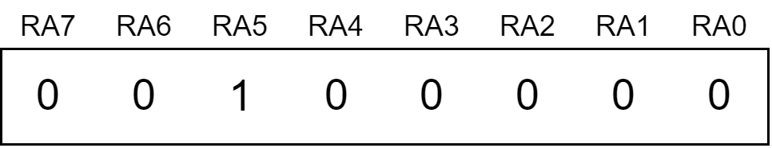
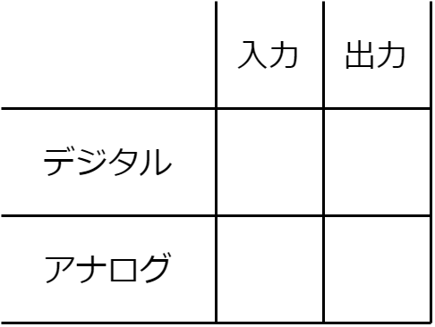
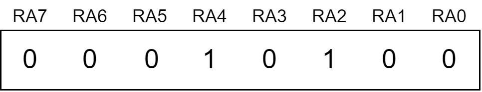

PIC講習（C言語）/LEDの点灯
概要
重要語
コメント
人が読むための文章
main関数
プログラムはここから始まる
文
1つの処理単位
必要語
今回の必要語はありません。
コーディング
それでは、テンプレートを説明していきます。
テンプレート
COPY
/****************************
main.c
PIC16F1827
MPLAB X IDE v5.45
XC8 v2.32
2021/03/23
****************************/
#include < xc.h>
// コンフィギュレーションの設定
#pragma config FOSC = INTOSC
#pragma config WDTE = OFF
#pragma config PWRTE = ON
#pragma config MCLRE = OFF
#pragma config CP = OFF
#pragma config CPD = OFF
#pragma config BOREN = ON
#pragma config CLKOUTEN = OFF
#pragma config IESO = OFF
#pragma config FCMEN = OFF
#pragma config WRT = OFF
#pragma config PLLEN = OFF
#pragma config STVREN = ON
#pragma config BORV = HI
#pragma config LVP = OFF
void main() {
OSCCON = 0b01110010 ;
ANSELA = 0x00 ;
ANSELB = 0x00 ;
PORTA = 0x00 ;
PORTB = 0x00 ;
TRISA = 0x20 ;
TRISB = 0x00 ;
// ここから
}
コメント
コメントをつけることで、他人が見た時にここはどのような処理を行っているかということがわかりやすくなったり、数か月後の自分が見た時に思い出しやすくなります。プログラマのメモのようなものです。/* */ //
include
#include < xc.h>
config
#pragma configという記述がたくさん並んでいますが、これはPICの設定を決める記述です。 PICのどの機能を使ってどの機能を使わないかを選択しています。ここを書き換えることは当分ありませんので、書き換える時に説明したいと思います。
main関数
mainというからには、ここが一番重要です。プログラムが開始されるとき、すなわち（PICの場合は）電源が入ったとき （厳密に言えば電源が入ってから数十ms後）は、ここから始まります（これをエントリポイントといいます）。 main() の前にvoid { }
COPY
void main() {
処理A;
処理B;
処理C;
}
この場合、処理A→処理B→処理Cの順に実行されます。
文
また、先ほどから「処理」と言ってきましたが、この1つの処理単位を文といいます。 結局のところ、たくさんの文を、どんな時にどの順番でやるかを指定することによって、PICが制御できます。 そして、C言語の重要な規則として、文の終わりにはセミコロン（; ; { }
COPY
void main(){ 処理A; 処理B; 処理C;}
このように書いても問題ありません。しかしこれでは、コンパイラにはよくても人間には優しくなく、可読性の低いコードになってしまいます。 そのため、適切な改行や空白、インデント（字下げ）を行うのが望ましいでしょう。これを自分でいちいちやるのが面倒だという人は、 MPLAB X IDEの、Source>Formatをクリックしてみましょう（Alt+Shift+Fでもできます）。自動で適切にフォーマットしてくれますので、非常に便利です。 適宜活用するとよいでしょう。
レジスタ
前に説明したように、PICのピンには様々な機能があります。ここでは、その機能をどのように制御するのかを見ていきます。PICには、レジスタというメモリがあります。レジスタに値を書き込んだり、レジスタの値を読み込んだりすることによって、外部の部品を制御したり、外部の状況を取得したりすることができます。
値の書き込み
レジスタに値を書き込むためには、以下のような構文を使います。
数値のところには、30 0b 0 0x 0b11110 30 036 0x1E 0b00011110
入力と出力
PICの端子は、その端子の電圧を読み取ることができる入力、もしくは、その端子を指定の電圧にできる出力の、どちらかを行うことができます。基本的にすべての端子は、入力端子と出力端子のどちらにも設定できるのですが、16F1827の場合、RA5のみは入力端子にしか設定できないので、注意してください。0 1
と書いたら、

このように対応付けられます（下位ビットから数えることに注意です）。そのため、ポートA側としては、RA5のみが入力端子で、その他は出力端子として設定されます。
COPY
TRISA = 0x20 ;
TRISB = 0x00 ;
デジタルとアナログ
PICの端子は、その端子の電位を0か1かの二値で表すデジタル端子と、連続的な（といっても精度に限界はありますが）値で表すアナログ端子の、どちらかを割り当てることができます。ほとんどの端子は、デジタル端子とアナログ端子のどちらにも設定できるのですが、16F1827の場合、RA5～7とRB0はデジタル端子にしか設定できないので注意してください（アナログ端子の場合はRA0などではなくAN0などと呼びます）。0 1 0x00
COPY
ANSELA = 0x00 ;
ANSELB = 0x00 ;
「入力/出力」と「デジタル/アナログ」、PICの端子はおもにこの2つの組み合わせによってその役割が決まります。以下の表をイメージするとよいでしょう。

電位を変化させる
さて、端子をデジタル出力端子に設定したところで、この出力を変化させられなければPICの意味がありません。そこで、この出力を変化させてみます。そのためには、PORTAとPORTBというレジスタを使います。このレジスタのbitに0 1
とすると、この対応は、ANSELのときと同様に、

このようになっています（PORTBも同様）から、RA2、RA4がHになり、RA0、RA1、RA3、RA6、RA7がLになります。RA5は入力端子なので、出力は設定されませんが、このように書き込んでも問題ありません（無視されるだけです）。また、レジスタ単位での書き込みは少々面倒なこともあるので、
COPY
RA2 = 1 ;
RB4 = 1 ;
RB7 = 0 ;
などとすることで、ビット単位での書き込み、すなわち、他の端子の出力をそのままにその端子の電位のみを変化させることができます（正確には端子の状態を読み取ってそれとマージする）。この例だと、RA2、RB4がHになり、RB7がLになります。
COPY
PORTA = 0x00 ;
PORTB = 0x00 ;
while文
さて、ここまではPICの初期設定について見ていきましたが、ここからはメインの部分に入っていきます。PC上で動かすプログラムでは、処理が終わると終了するのが一般的です。対してPICのプログラムでは、電源が入ってからプログラムが開始し、電源が切れるまで処理を実行し続けます。そのため電源が供給されている間、処理は終わることなく常に何らかの処理をしています。では、何もせずこのままmain関数を終了したらどうなるでしょうか。これはマイコンの仕様によりますが、本来プログラムとして実行すべきでない所をプログラムだと解釈して実行する可能性があり、危険です。そのため、処理を終えさせないようにする必要があります。以下のコードを見てください。
COPY
処理A;
while ( 1 ) {
処理B;
処理C;
}
プログラムは原則として上から順番に実行される、と言いましたが、ここでこの原則に反する挙動をします。このプログラムは、処理A→処理B→処理C→処理B→処理C→...のように実行されます。すなわち、while ( 1 ) { } while ( 1 ) { 処理A; } while ( 1 ) 処理A;
練習問題 Task1
図のように、RB0~RB3にLEDを4つつけましょう。それぞれ、LED1~LED4と呼ぶことにします。 ここで、LED1、2、4が点灯し、LED3のみが消灯するようにしてください。すなわち、oxoo（o:点灯、x:消灯）のようにしてください。
Hint
LEDを点灯させるには、PICの端子をH/Lのどちらにすればいいでしょうか。
解答
Task1解答
COPY
// main関数より上は省略
void main() {
OSCCON = 0b01110010 ;
ANSELA = 0x00 ;
ANSELB = 0x00 ;
PORTA = 0x00 ;
PORTB = 0x00 ;
TRISA = 0x20 ;
TRISB = 0x00 ;
while ( 1 ) {
PORTB = 0b00001011 ;
}
}
解答2
Task1解答2
COPY
// main関数より上は省略
void main() {
OSCCON = 0b01110010 ;
ANSELA = 0x00 ;
ANSELB = 0x00 ;
PORTA = 0x00 ;
PORTB = 0x00 ;
TRISA = 0x20 ;
TRISB = 0x00 ;
while ( 1 ) {
// 解答1はバイト単位でしたが、ビット単位でやるとこうなります
RB0 = 1 ;
RB1 = 1 ;
RB2 = 0 ;
RB3 = 1 ;
}
}
/* このほかにも、
PORTB = 0b00001011;
while (1);
としてしまう方法など、いろいろ考えられます */